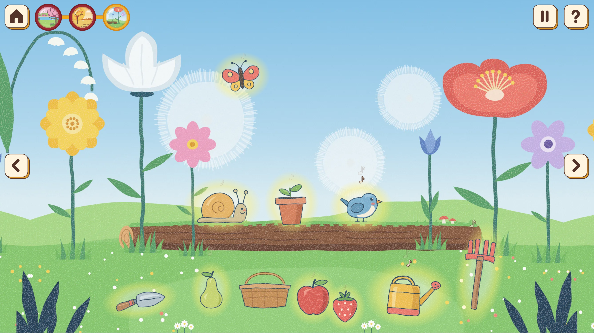

Garden of Sounds
Synopsis
Garden of Sounds is a musical storybook for toddlers. Tap and drag tools, animals and fruits across three illustrated gardens to combine percussion, melodies and ambient textures. Height changes pitch, left-to-right movement changes rhythm, and a shared beat and chords keep the layers together.

Final instrument commit log — 41 commits
About the commit timestamps: I usually draft commit messages in a separate document, then copy and paste them when committing the changes. Some changes were recorded together as separate commits after implementation. Their timestamps indicate when the work was committed, rather than the duration of each development task.
Complete main-branch history through da444ed, newest first. Updated 27 October 2026.
Download final instrument commit-log CSV (41 commits)
| Author | Author date | Commit subject | Commit body |
|---|---|---|---|
| Son Hai Anh Nguyen | Document Chrome viewport testing with screenshot evidenceda444ed | ||
| Son Hai Anh Nguyen | Complete instrument documentation and font licence noticesdd04d7c | ||
| Son Hai Anh Nguyen | Make sound respond during draggingf636d18 | Start playback during mouse, touch and pen drags using the existing Tone.js synth and shared beat. Let pitch and rhythm changes sound before release, throttle rapid triggers and avoid restarting playback when the object is dropped. | |
| Son Hai Anh Nguyen | Show guidance only on the first garden visit5ee4a57 | Remember the first guide appearance with shared browser storage across all three gardens, while keeping Help available. Prevent delayed guide steps from continuing after closing and refresh the script links. | |
| Son Hai Anh Nguyen | Make the garden play in harmony and easier to read as an instrumentf6b61ff | Objects now share one beat and an I-vi-IV-V chord round, each with its own note set; note badges, < > garden keys, a guide that passes at the arrow and a redrawn turn-phone picture. | |
| Son Hai Anh Nguyen | Fix stagger garden playback and reduce visual effectsb99fabb | Restored sequential playback with random 0.5-1s intervals between objects, ensuring pause stops all active and queued sounds. Reduced the size, opacity, and intensity of colored halos across all three gardens for a cleaner visual experience. | |
| Son Hai Anh Nguyen | Refine musical mapping and guided playd08c202 | Map pitch and repeat speed continuously, generate fresh looping tunes, and add the interactive guide, welcome sound, phone prompt and responsive controls. Refresh cache tags so the updated storybook and gardens load reliably. | |
| Son Hai Anh Nguyen | Complete the main garden playback controls8c24628 | Keep note choice and repeat timing tied to object position, start repeating playback after taps or drops, and let the play button bring the whole garden in with a shuffled order before changing to pause. Update the instructions and cache version. | |
| Son Hai Anh Nguyen | Refine button feedback and playback controlsd639874 | Add shared press-and-spring behavior for picture buttons, replace stop-all with pause and resume, and lead the help demonstration with clear shadowless arrows. Update the related artwork, cache versions and documentation. | |
| Son Hai Anh Nguyen | Improve storybook guidance across screen sizes7668758 | Add a press-and-hold guide for grown-ups and keep the picture book usable in portrait layouts with a turn-for-more-space hint. Document the updated controls and child-friendly interaction choices. | |
| Son Hai Anh Nguyen | Add child-friendly garden feedback2946b6a | Add quiet and help controls, playing glows, floating notes, guided demonstrations and gentle object hints. Refresh the shared buttons and garden artwork while preserving the existing sound mapping. | |
| Son Hai Anh Nguyen | Complete the picture book refinements7e4cdf6 | Use the supplied split-page artwork, open-book ribbon and phone rotation prompt. Keep complete gardens across each spread, place page controls at the book edges and preserve reliable mouse and touch swiping. | |
| Son Hai Anh Nguyen | Improve page navigation and button feedbackba72b66 | Keep mouse and touch swipes moving in the expected direction, block browser image dragging and show controls raised at rest and flat on hover. | |
| Son Hai Anh Nguyen | Refine the story and garden page spreads4e1de24 | Show the title and each complete garden across both pages, make either half open the garden and keep a small play button in the corner. | |
| Son Hai Anh Nguyen | Improve the picture book layout across screens6fb446d | Hide the duplicate closed-book ribbon, let the open book fill the window, place arrows at its edges and show a landscape prompt on upright phones. | |
| Son Hai Anh Nguyen | Turn the start page into a picture book that opens and turns709294c | Tapping the cover opens the book, big arrows or a swipe turn its pages and a cross closes it. Each garden has its own spread, and tapping it zooms from the page into the garden and back. | |
| Son Hai Anh Nguyen | Let resting objects breathe and widen their touch area0a161ea | Objects that are not playing now swell gently every few seconds, so a child can see what can be touched without words. On touch screens the invisible margin around each object grows to 1.25rem. | |
| Son Hai Anh Nguyen | Show each garden as a picture on its chapter button2ef2d81 | The numbered chapter dots are now round pictures of their gardens, so a child who cannot read numbers can still pick a scene. The current garden keeps a gold rim, and the buttons are larger. | |
| Son Hai Anh Nguyen | Version page links across the storybook2e1aca5 | Add the scene-preview version to Home, Start and chapter URLs so navigation loads current HTML instead of restoring cached numbered-button pages. | |
| Son Hai Anh Nguyen | Keep garden previews inside chapter buttons5eedb49 | Version the stylesheet URLs so browsers load the new preview rules, and retain the shared button-image sizing as a fallback when an older stylesheet remains cached. | |
| Son Hai Anh Nguyen | Correct the picture creditd28ef5e | Remove the inaccurate SVG export statement and update the repository structure notes to describe the new garden preview buttons. | |
| Son Hai Anh Nguyen | Show garden previews in chapter navigation0691200 | Replace the numbered chapter dots with cropped WebP scene previews on the cover and in each garden. Keep the existing links, keyboard access and gold current-garden state. | |
| Son Hai Anh Nguyen | Add home and chapter buttons to each gardendc88670 | Every garden now has a home button that goes back to the storybook cover, and numbered chapter dots that open the other gardens, with the current garden's dot in gold. | |
| Son Hai Anh Nguyen | Turn the start page into a storybook cover9ae15a1 | The start page is now a closed storybook. Its Start sign opens the book and loads the first garden, and its numbered chapters open each of the three gardens. | |
| Son Hai Anh Nguyen | Let objects move anywhere on the screen02959a1 | Objects can now be dragged into the extended garden around the original picture and always stay fully on screen. The picture no longer takes pointer events, so a drag that starts above the original picture is not mistaken for dragging the picture itself. | |
| Son Hai Anh Nguyen | Extend the garden pictures to fill the whole window073c25b | Each garden picture keeps the original picture in the middle and continues the garden past its sides and into the sky, so the garden fills the window without being enlarged. The header is hidden, and the picture is chosen by the window's shape from three shapes instead of four. | |
| Son Hai Anh Nguyen | Add play instructions to the garden selection page9ff028b | Tell adults how to start and stop sounds and move objects before choosing one of the three gardens. | |
| Son Hai Anh Nguyen | Document garden assets, musical rules and design credits0e3202d | Describe the still backgrounds and separate transparent object images, tap and drag controls, sound mapping and visual feedback. Explain the prototype connections and retain library and AI assistance credits. | |
| Son Hai Anh Nguyen | Animate taps, playing notes and object dropsd03dc60 | Show outline glow when an object is tapped. Synchronize tool sways, animal hops and fruit pulses with their notes. Create a small ground ripple on drop and accommodate reduced-motion preferences. | |
| Son Hai Anh Nguyen | Prepare glow and drop feedback for garden 3: Flower meadowf475726 | Add a decorative ripple layer and the garden-specific glow colour. Keep feedback separate from the background picture and object image assets so the shared animation behavior can use it. | |
| Son Hai Anh Nguyen | Prepare glow and drop feedback for garden 2: Painted orchard5cd90ef | Add a decorative ripple layer and the garden-specific glow colour. Keep feedback separate from the background picture and object image assets so the shared animation behavior can use it. | |
| Son Hai Anh Nguyen | Prepare glow and drop feedback for garden 1: Lakeside picnic2e4ba02 | Add a decorative ripple layer and the garden-specific glow colour. Keep feedback separate from the background picture and object image assets so the shared animation behavior can use it. | |
| Son Hai Anh Nguyen | Implement shared sound families and position-based playback289bbce | Map tools to pitched drums, animals to melody and fruits to sustained textures. Use height to choose a pentatonic register and horizontal position to choose repeating rhythm. Add tap start/stop, zone-change notes, keyboard movement and a shared musical clock. | |
| Son Hai Anh Nguyen | Configure sound and pitch zones for garden 3: Flower meadow8ad34ce | Load Tone.js and configure the garden in F at 92 BPM. Set sky and ground boundaries for landscape and portrait layouts. Add playback button states, interaction instructions, sound status and a JavaScript fallback message. | |
| Son Hai Anh Nguyen | Configure sound and pitch zones for garden 2: Painted orchardcf94c72 | Load Tone.js and configure the garden in D at 84 BPM. Set sky and ground boundaries for landscape and portrait layouts. Add playback button states, interaction instructions, sound status and a JavaScript fallback message. | |
| Son Hai Anh Nguyen | Configure sound and pitch zones for garden 1: Lakeside picnic1c888a6 | Load Tone.js and configure the garden in C at 76 BPM. Set sky and ground boundaries for landscape and portrait layouts. Add playback button states, interaction instructions, sound status and a JavaScript fallback message. | |
| Son Hai Anh Nguyen | Define object interaction for garden 3: Flower meadow54057d3 | Load the shared garden interaction script. Wrap the ten separate object images in buttons and disable native image dragging, keeping their IDs, categories and accessible image descriptions. | |
| Son Hai Anh Nguyen | Define object interaction for garden 2: Painted orchard27550e6 | Load the shared garden interaction script. Wrap the ten separate object images in buttons and disable native image dragging, keeping their IDs, categories and accessible image descriptions. | |
| Son Hai Anh Nguyen | Define object interaction for garden 1: Lakeside picnic1fdb7c1 | Load the shared garden interaction script. Wrap the ten separate object images in buttons and disable native image dragging, keeping their IDs, categories and accessible image descriptions. | |
| Son Hai Anh Nguyen | Define shared object dragging and touch targets5586b26 | Add the shared pointer interaction script and object-button styles. Track movement within the garden, distinguish dragging from taps, and layer lower objects in front of higher ones. Enlarge the interactive area around each object image. | |
| Son Hai Anh Nguyen | Add garden backgrounds and separate object imagesac0bc6a | Set up three garden layouts with WebP backgrounds for different screen shapes and separate transparent object images. |
View the final commit history in Assignment 3
Response to Purpose and Worth
Recognisable objects, immediate sound and visual feedback make experimentation the central activity. Children choose and move musical layers without scores or wrong placements. Visual hints and an interactive guide support discovery, while bounded musical variation keeps repeated play lively.
Scenario: Musical Toy for Toddlers
Prompt:
Design a way for young children with minimal language skills to explore music.
Context:
Browser based musical instruments offer users the ability to dynamically perform music and explore complex audio design. While these interactions allow for a depth of control, they can be intimidating for many adult users, let alone young children whose language skills are still developing.
Interpretation
I interpret this scenario as a first encounter with musical play: children explore, repeat and combine sounds without needing musical theory, reading or precise gestures. The aim is discovery and confidence rather than reproducing a song correctly.
Read the full scenario discussion and design rationale in Assignment 1
Building off this interpretation, I identify five main purposes for the project:
- Explore different sounds, musical elements and simple instrument-like
interactions through
play.
- Discover cause and effect by learning how different actions produce different
sounds and
audiovisual responses.
- Experiment freely with sound by combining, repeating and varying their
interactions.
- Create and express themselves through the sounds and musical combinations they
produce.
- Develop familiarity and confidence with musical interaction before
encountering more structured or
physical instruments.
To fulfill these purposes, the project embodies five core values of worth:
- Playfulness: Encourage curiosity, enjoyment and experimentation rather
than structured
learning.
- Accessibility: Simple, intuitive interactions achievable with minimal
language and limited
fine
motor skills.
- Self-Expression & Creativity: Multiple ways to combine sounds so user
choice shapes the
musical
outcome and experience.
- Confidence: Make experimentation feel safe and rewarding by avoiding
punishment, failure
states
and judgement.
- Learning Through Discovery: Musical understanding emerges naturally
through interaction and
repetition rather than
explicit instruction.
This interpretation positions the project as an open-ended interactive
soundscape where discovery
itself is the primary goal.